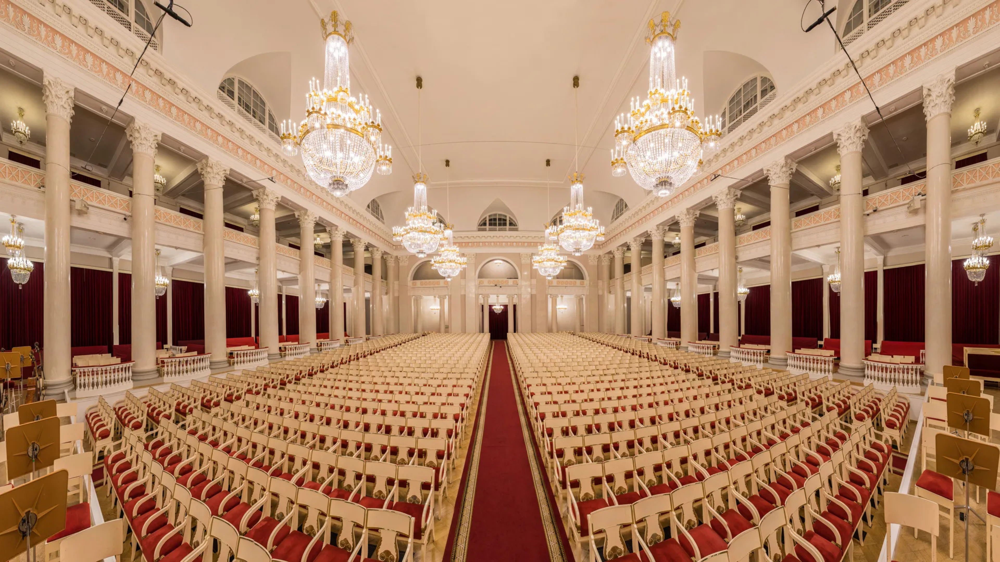
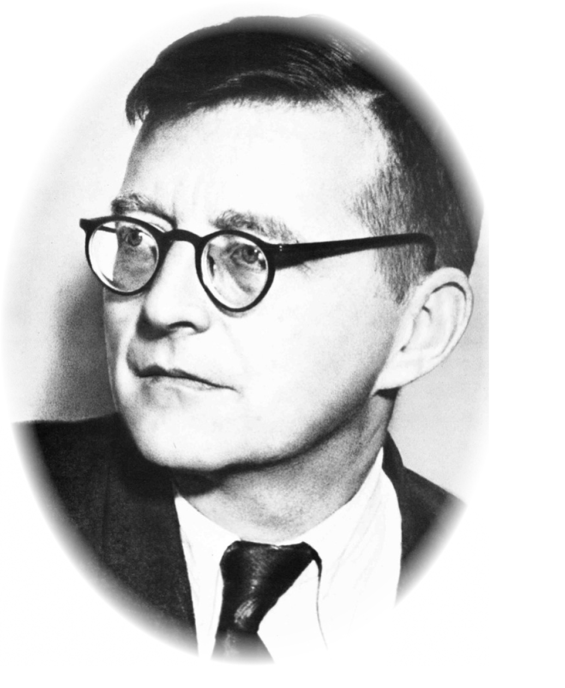
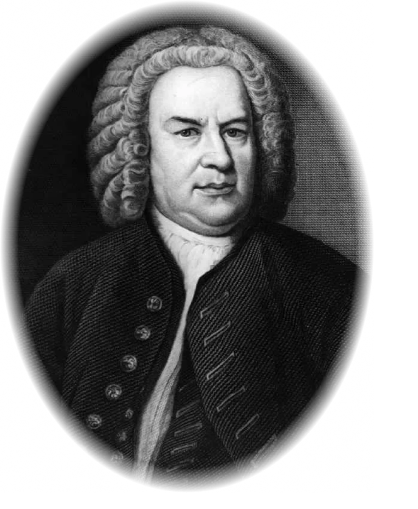

Забронировать билеты
Филармония
Билеты
Информация
+5 686 453-09-12
Дом
Контакты
Расписание на сегодня
И. С. Бах
Д. Д. Шостакович

Богатое звучание органа с незапамятных времен связано с образами
божественного величия, не в последнюю очередь потому, что исторически
этот тембр был неотделим от атмосферы собора – дома Божьего, за порогом
которого начиналось пространство сакрального.
Высокий уровень композиторской техники, способность создавать яркие и
выразительные мелодии и темы, мастерское владение полифонией и тончайшее
владение искусством оркестровки, в сочетании с личной эмоциональностью и
колоссальной работоспособностью, сделали его музыкальные произведения
яркими, самобытными и обладающими огромной художественной ценностью